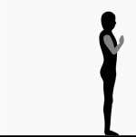
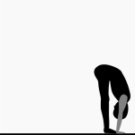
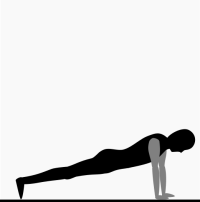
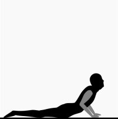
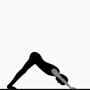
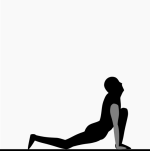
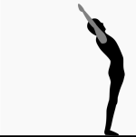

"Surya Namaskar" or "Sun Salutation" consists of 12 asanas with 9 unique
Yoga postures.
- Fast paced Surya Namaskar is good for building stamina.
- Slow paced Surya Namaskar, (by holding each posture for some time), is good for increasing flexibility, endurance and concentration.
- Daily practice of Surya Namaskar:
- improves metabolism,
- helps in weight management,
- improves cardio-vascular health,
- relaxes the mind.
--- Ad ---
Step 0: Starting position
Before you start: Do some loosening exercises such as neck movements, arms, wrist,
waist, knee and ankle rotations. Use a soft Yoga mat of at least 4mm thickness.
Posture: Move to the front of the mat and stand comfortably with feet about 2 inches apart. Roll back your shoulders with both your arms by the side of your body. Stand straight with your spine erect.
Breathing: Breathe at a natural rhythm.
Posture: Move to the front of the mat and stand comfortably with feet about 2 inches apart. Roll back your shoulders with both your arms by the side of your body. Stand straight with your spine erect.
Breathing: Breathe at a natural rhythm.
Step 1: Pranamasan

Pranam is a gesture made for greeting somebody.
Transition: Breathe in and out as you bring your palms together in namaskar mudra in front of your chest.
Posture: Stand with spine erect with thumbs at the centre of the chest. Fill yourself with gratitude towards the nature.
Breathing: Breathe at a natural rhythm after reaching the final posture.
Transition: Breathe in and out as you bring your palms together in namaskar mudra in front of your chest.
Posture: Stand with spine erect with thumbs at the centre of the chest. Fill yourself with gratitude towards the nature.
Breathing: Breathe at a natural rhythm after reaching the final posture.
Step 2: Hastauthanasan

Hasta means hands and uthan means raised.
Transition: As you breathe in, stretch both your hands forward and raise them and stretch your entire body. Now bend slightly backwards (from your lower back) and look upwards such that your arms touch your ears.
Posture: In the final position your arms would be touching your ears and you will feel stretch in your complete body. Take care not to bend too much backwards as it may cause you to loose balance and feeling of giddiness.
Breathing: Breathe at a natural rhythm after reaching the final posture.
Transition: As you breathe in, stretch both your hands forward and raise them and stretch your entire body. Now bend slightly backwards (from your lower back) and look upwards such that your arms touch your ears.
Posture: In the final position your arms would be touching your ears and you will feel stretch in your complete body. Take care not to bend too much backwards as it may cause you to loose balance and feeling of giddiness.
Breathing: Breathe at a natural rhythm after reaching the final posture.
--- Ad ---
Step 3: Padahastasan

Pada means feet and hasta means hands.
Transition: As you breathe out, maintaining the stretch in your body bend forward from your hip to point both your hands forward. You may now bend further by curving your back. Try to place your palms by the side of legs.
Posture: Try to maintain the tension in your back as you try to place your palms besides your feet. If you can easily place your palms on the floor, then bend your elbows and push further down.
Breathing: Breathe at a natural rhythm after reaching the final posture.
Transition: As you breathe out, maintaining the stretch in your body bend forward from your hip to point both your hands forward. You may now bend further by curving your back. Try to place your palms by the side of legs.
Posture: Try to maintain the tension in your back as you try to place your palms besides your feet. If you can easily place your palms on the floor, then bend your elbows and push further down.
Breathing: Breathe at a natural rhythm after reaching the final posture.
Step 4: Ashwasanchalanasan

Ashwa means horse and sanchalan means control.
Transition: Place both hands on the floor besides your feet. As you breathe in, move your right leg (during odd numbered suryanamaskar) or left leg (during even numbered suryanamaskar) as much back as possible and place your knee and toe on the floor. The other leg in front is almost perpendicular to the floor with the foot sole completely resting on the floor. The app on this page says right when you need to move the right leg backward and left when you need to move left leg backward.
Posture: In the final posture you will be looking upwards constantly pushing your hip towards the floor.
Breathing: Breathe at a natural rhythm after reaching the final posture.
Transition: Place both hands on the floor besides your feet. As you breathe in, move your right leg (during odd numbered suryanamaskar) or left leg (during even numbered suryanamaskar) as much back as possible and place your knee and toe on the floor. The other leg in front is almost perpendicular to the floor with the foot sole completely resting on the floor. The app on this page says right when you need to move the right leg backward and left when you need to move left leg backward.
Posture: In the final posture you will be looking upwards constantly pushing your hip towards the floor.
Breathing: Breathe at a natural rhythm after reaching the final posture.
Step 5: Hastadandasan

Hasta means hand and dand means wooden pole.
Transition: Holding you breath inside, move the leg from forward to the back and place it besides the other leg. Raise both knees off the floor.
Posture: Try to maintain your complete body in a straight line as shown in the picture.
Breathing: Hold your breath for some time if you can before transitioning to the next posture.
Transition: Holding you breath inside, move the leg from forward to the back and place it besides the other leg. Raise both knees off the floor.
Posture: Try to maintain your complete body in a straight line as shown in the picture.
Breathing: Hold your breath for some time if you can before transitioning to the next posture.
--- Ad ---
Step 6: Ashtanga namaskar

Asta means eight, anga means body and namaskar means salutation: Eight parts of the body touching
the floor for salutation.
Transition: Very slowly as you breathe out, lower you body to place your knees, chest and chin on the floor raising your abdomen off the floor.
Posture: Only eight parts of your body should be touching the floor, namely: chin, chest, two hands, two knees and two toes. The abdomen should be kept as away from the floor as possible.
Breathing: Breathe at a natural rhythm after reaching the final posture.
Transition: Very slowly as you breathe out, lower you body to place your knees, chest and chin on the floor raising your abdomen off the floor.
Posture: Only eight parts of your body should be touching the floor, namely: chin, chest, two hands, two knees and two toes. The abdomen should be kept as away from the floor as possible.
Breathing: Breathe at a natural rhythm after reaching the final posture.
Step 7: Bhujangasan

Bhujang means snake (hence also known as cobra posture).
Transition: As you breathe in, slide further placing your abdomen on the floor and raising your chin and chest off the floor.
Posture: In this posture, try to look up and try to keep your shoulders away from the ears without locking your elbows. Do not use lot of hand strength, instead try to use your back muscles to raise your chin higher.
Breathing: Breathe at a natural rhythm after reaching the final posture.
Transition: As you breathe in, slide further placing your abdomen on the floor and raising your chin and chest off the floor.
Posture: In this posture, try to look up and try to keep your shoulders away from the ears without locking your elbows. Do not use lot of hand strength, instead try to use your back muscles to raise your chin higher.
Breathing: Breathe at a natural rhythm after reaching the final posture.
Step 8: Adhomukhaswanasan or Parvatasan

Adhomukha means downward facing and swan means dog. Parvat means mountain.
Transition: As you breathe out, raise you back and knees to form an inverted V-shape of the body.
Posture: In this posture, try to push your heels to touch the floor creating a tension in calf muscles. Also, try to push your head downwards, hence stretching your back.
Breathing: Breathe at a natural rhythm after reaching the final posture.
Transition: As you breathe out, raise you back and knees to form an inverted V-shape of the body.
Posture: In this posture, try to push your heels to touch the floor creating a tension in calf muscles. Also, try to push your head downwards, hence stretching your back.
Breathing: Breathe at a natural rhythm after reaching the final posture.
--- Ad ---
Step 9: Ashwasanchalanasan

Transition: As you breathe in, bring your right leg or left leg (depending on odd
or even numbered Suryanamaskar) forward and place in-between your hands. The app on this page says
right or left depending on the current suryanamaskar number, hence alternating between left and
right leg. Place the knee of the other leg (the one behind) on the floor.
Posture: In the final posture, look upwards and push your hip towards the floor.
Breathing: Breathe at a natural rhythm after reaching the final posture.
Posture: In the final posture, look upwards and push your hip towards the floor.
Breathing: Breathe at a natural rhythm after reaching the final posture.
Step 10: Padahastasan

Transition: As you breathe out, move the behind leg forward to place it besides
the other leg. Try to place your palms besides your feet.
Posture: Try to maintain the tension in your back as you try to place your palms besides your feet. If you can easily place your palms on the floor, then bend your elbows and push further down.
Breathing: Breathe at a natural rhythm after reaching the final posture.
Posture: Try to maintain the tension in your back as you try to place your palms besides your feet. If you can easily place your palms on the floor, then bend your elbows and push further down.
Breathing: Breathe at a natural rhythm after reaching the final posture.
Step 11: Hastauthanasan

Transition: As you breathe in, stretch both your hands forward and raise them
above your head and stretch your entire body. Now bend slightly backwards (from your lower back) and
look upwards such that your arms touch your ears.
Posture: In the final position your arms would be touching your ears and you will feel stretch in your complete body. Take care not to bend too much backwards as it may cause you to loose balance and feeling of giddiness.
Breathing: Breathe at a natural rhythm after reaching the final posture.
Posture: In the final position your arms would be touching your ears and you will feel stretch in your complete body. Take care not to bend too much backwards as it may cause you to loose balance and feeling of giddiness.
Breathing: Breathe at a natural rhythm after reaching the final posture.
--- Ad ---
Step 12: Relaxation posture

Transition: Without bending your hands as you breathe out, swing your hands from
sideways to place them beside your body. Keep your spine erect and relax as you get ready for the
next suryanamaskar.
Posture: Relax your body.
Breathing: Breathe at a natural rhythm and relax your body.
Posture: Relax your body.
Breathing: Breathe at a natural rhythm and relax your body.